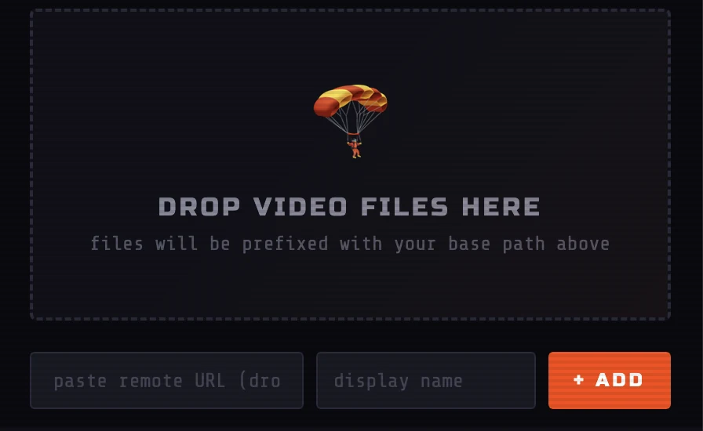
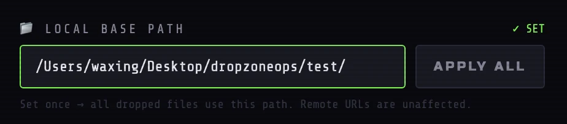
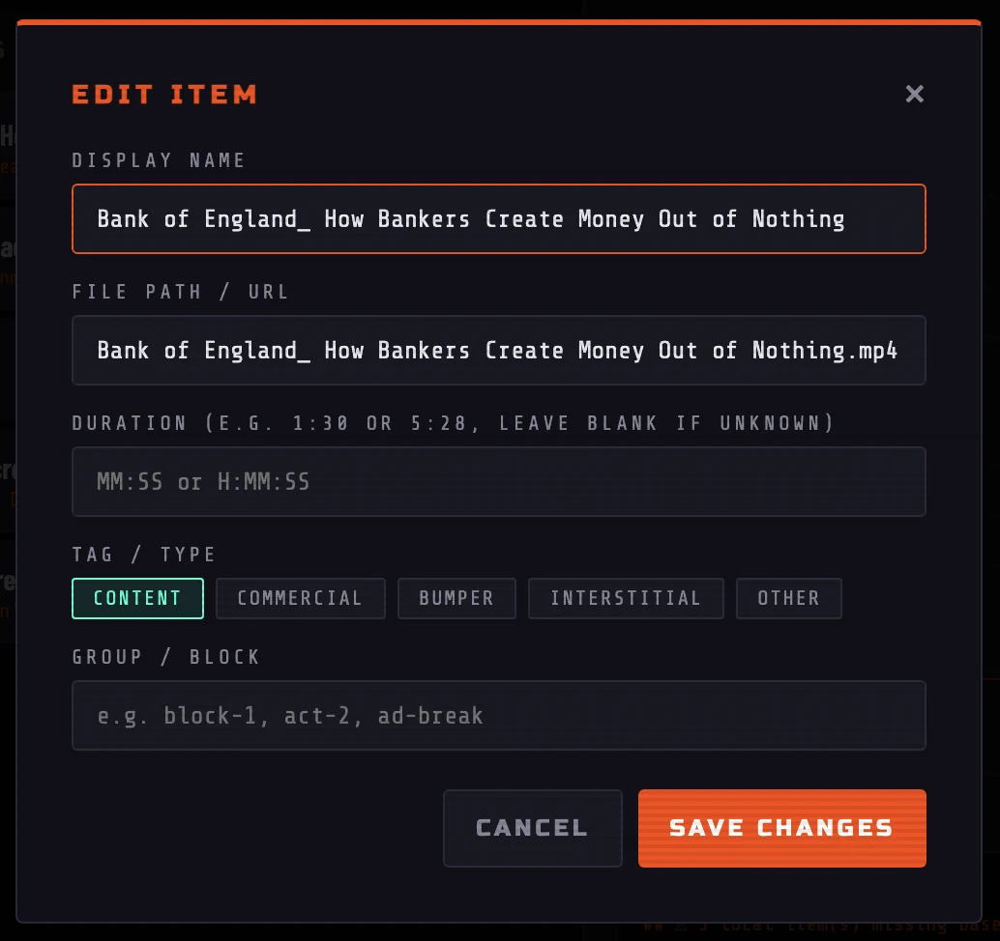
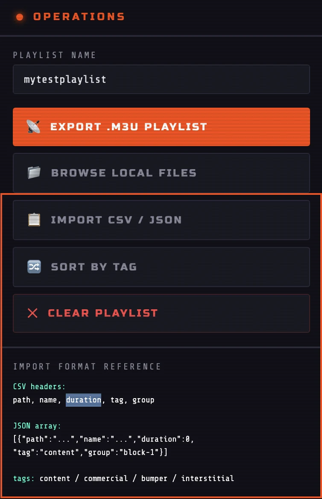
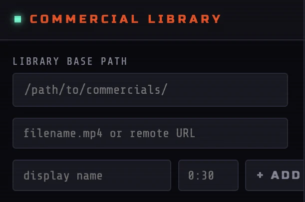
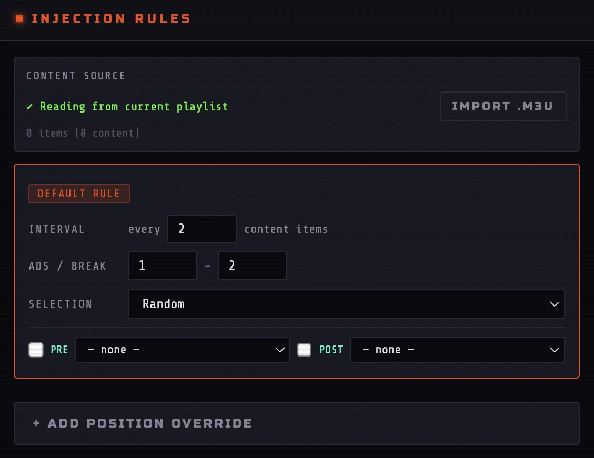
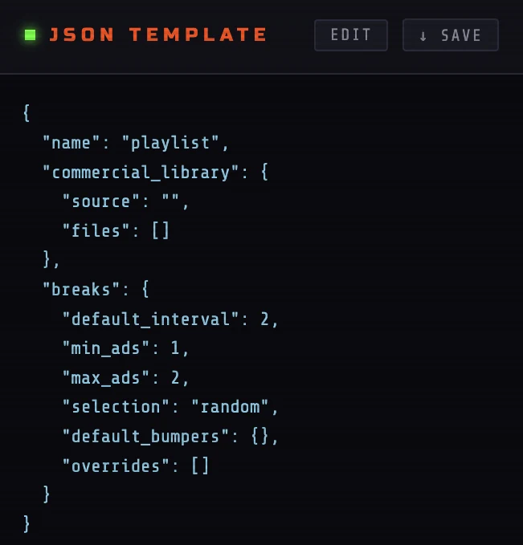
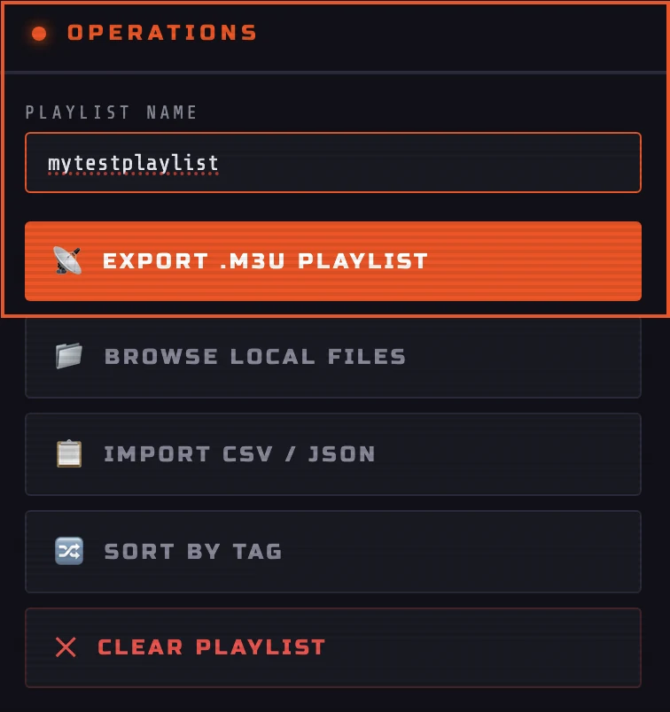
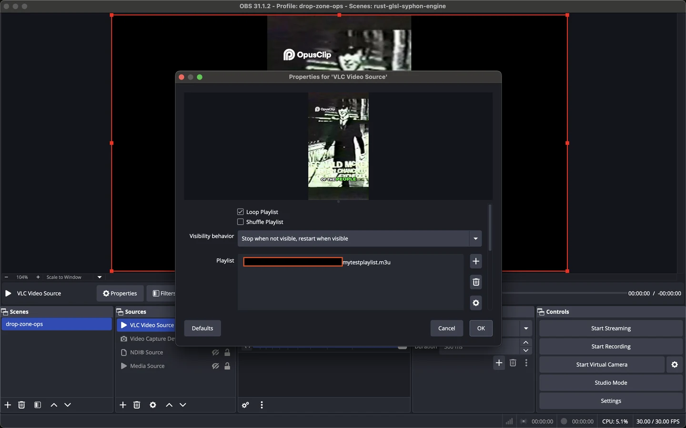

Start here
Quick Start
Drop Zone Ops runs as a static browser application. There is no account, command line, package installation, or server process required.
Inputs
Adding Media
Content can be added several ways. All input methods feed the same ordered playlist, so local files and remote URLs can be mixed in one block.
Drop files or folders
Drag media from the operating system into the main drop zone. Individual files use the current root folder path as a prefix. Folder drops preserve nested paths when the browser exposes that information.

Browse local files
Click Browse Local Files in the Operations panel to open the browser file picker. Multiple files may be selected at once.
Paste a remote URL
Paste a direct HTTP or HTTPS media URL into the URL field, optionally provide a display name, and click + ADD. Remote URLs pass through unchanged and are never prefixed with the local root path.
Local media
Local Base Paths
Browsers do not expose a full local filesystem path when an ordinary file is selected. Drop Zone Ops solves this by combining the filename with a root path that you provide.

Examples
macOS / Linux
/Users/yourname/Videos/content/
Windows
C:\Users\yourname\Videos\content\How the path is applied
- Individual local files are prefixed with the root folder path.
- Folder drops attempt to preserve their nested relative path.
- Remote HTTP and HTTPS URLs are never changed.
- Apply All reapplies the current root path to existing local items.
Playlist structure
Organizing a Playlist
Each row represents one M3U entry. Drag the handle on the left side of a row to change playback order.

Tags
Click a row's colored tag badge to cycle through content types.
| Tag | Typical use |
|---|---|
content | Main programming, episodes, films, or features |
commercial | Advertisements and sponsor spots |
bumper | Station IDs, intros, outros, and break transitions |
interstitial | Filler, transitions, or short between-program pieces |
other | Anything that does not fit the primary categories |
Groups and blocks
A group is an optional label written to the group-title attribute in the exported M3U. Examples include block-1, late-night, or ad-break-2.
Sort by Tag
The Operations panel can group rows by tag. Use this only when that grouped order is the desired playback order; sorting changes the actual playlist sequence.
Runtime statistics
The right panel shows total item counts, per-tag counts, and calculated runtime. Total time only includes entries that have a valid duration.
Metadata
Editing Entries
Click an item's title to open its editor.

| Field | Purpose |
|---|---|
| Display Name | The title written after the comma in the #EXTINF line |
| File Path / URL | The local path or remote media address used for playback |
| Duration | Accepts MM:SS or H:MM:SS, such as 22:30 or 1:04:15 |
| Tag / Type | Written to the custom tvg-type attribute |
| Group / Block | Written to the group-title attribute |
Bulk input
Importing CSV and JSON
Use Import CSV / JSON when a programming plan already exists in a spreadsheet, script output, or data file.

CSV format
The accepted header names are path, name, duration, tag, and group.
path,name,duration,tag,group
/Users/yourname/Videos/episode-01.mp4,Episode 01,22:30,content,block-1
https://media.example.com/ad.mp4,Soda Ad,0:30,commercial,ad-break-1JSON format
[
{
"path": "/Users/yourname/Videos/episode-01.mp4",
"name": "Episode 01",
"duration": "22:30",
"tag": "content",
"group": "block-1"
},
{
"path": "https://media.example.com/ad.mp4",
"name": "Soda Ad",
"duration": "0:30",
"tag": "commercial",
"group": "ad-break-1"
}
]Automated breaks
Commercial Injection
The Commercial Injection panel merges a content playlist with commercials and bumpers according to reusable rules. It can read the current playlist or import a separate M3U or JSON content source.

1. Build the commercial library
Set an optional library base path, then add commercial files by filename, full local path, or remote URL. Each clip can have a display name and duration.

2. Choose the content source
By default, the injector reads the current Drop Zone Ops playlist. Use Import .M3U to operate on an external content playlist instead.
3. Configure the default rule
The default rule fires every specified number of content items. It controls the minimum and maximum number of commercials in each break and the selection method.

| Selection | Behavior |
|---|---|
random | Selects clips randomly from the available commercial library |
sequential | Cycles through the commercial library in order across breaks |
pool | Uses the configured pool behavior exposed by the current builder interface |
specific | May be represented in imported templates that name exact clips |
4. Add position overrides
An override applies a different rule after a specific content item. This can create a longer first break, a sponsor-specific block, or a different bumper sequence at a known point in the program.
5. Assign bumpers
Enable a pre-break bumper, post-break bumper, or both. A pre-break clip might announce an upcoming break; a post-break clip might identify the station or return to programming.
6. Review or edit the JSON template
The live JSON representation can be unlocked with Edit, validated and locked again, saved for reuse, or replaced with an imported template.

7. Inject and update
Review the merged preview, then click Inject & Update Playlist. The merged result replaces the active playlist in the main builder. Export it normally after verifying the order.
Commercial Injection JSON template example
{
"name": "saturday-night-block",
"commercial_library": {
"source": "/Users/yourname/Videos/commercials/",
"files": [
{ "name": "Soda Ad", "path": "soda-ad.mp4", "duration": "0:30" },
{ "name": "Car Ad", "path": "car-ad.mp4", "duration": "0:30" },
{ "name": "And We're Back", "path": "back-bumper.mp4", "duration": "0:08" }
]
},
"breaks": {
"default_interval": 2,
"min_ads": 1,
"max_ads": 2,
"selection": "random",
"default_bumpers": {
"post": "/Users/yourname/Videos/commercials/back-bumper.mp4"
},
"overrides": [
{
"after_item": 1,
"min_ads": 2,
"max_ads": 2,
"selection": "sequential",
"bumpers": {
"pre": "/Users/yourname/Videos/commercials/into-break.mp4",
"post": "/Users/yourname/Videos/commercials/back-bumper.mp4"
}
}
]
}
}Output
Exporting M3U
Enter a value in Playlist Name and click Export .M3U Playlist. The browser downloads a file using that name.

saturday-night-block exports as saturday-night-block.m3u.Before exporting
- Verify that every local path is valid on the playback machine.
- Confirm the final row order because that is the playback order.
- Check that remote URLs are directly accessible.
- Review the M3U preview for unexpected metadata or paths.
Playback
Using the Playlist in OBS
- Install VLC on the OBS machine if it is not already available.
- In OBS, add a new VLC Video Source.
- Use the plus button beneath its playlist and choose Add Path/URL.
- Select the exported
.m3ufile. - Confirm that OBS can resolve every local path and remote URL in the playlist.

Reference
M3U Format
The export uses Extended M3U. The file begins with #EXTM3U. Each media item is represented by a metadata line followed by its path or URL.
#EXTM3U
#EXTINF:1350 group-title="block-1" tvg-type="content",Episode 01
/Users/yourname/Videos/episode-01.mp4
#EXTINF:30 group-title="ad-break-1" tvg-type="commercial",Soda Ad
https://media.example.com/ad.mp4
#EXTINF:8 group-title="ad-break-1" tvg-type="bumper",And We're Back
/Users/yourname/Videos/back-bumper.mp4| Drop Zone Ops field | M3U output |
|---|---|
| Duration | The number after #EXTINF:, in seconds |
| Display Name | The title after the comma |
| Tag | The custom tvg-type attribute |
| Group | The group-title attribute |
| File Path / URL | The line immediately following the metadata |
Problems
Troubleshooting
The playlist loads, but local media cannot be found
Open the exported M3U in a text editor and inspect the media paths. Confirm that the root folder matches the playback computer, the filenames are correct, and Windows/macOS path conventions are not mixed.
A remote URL does not play
Test the URL directly in VLC. It may point to a webpage, require authentication, expire, redirect in an unsupported way, or block access from the playback software.
Total Time is incomplete
The runtime is calculated only from entries with valid duration values. Edit missing entries and use MM:SS or H:MM:SS.
CSV fields are not recognized
Use the exact header names path,name,duration,tag,group. Save the file as a standard comma-separated UTF-8 CSV and quote values that contain commas.
The Commercial Injection template fails to lock or import
Validate that the file contains valid JSON: double-quoted keys and strings, no comments, no trailing commas, and properly balanced braces and brackets.
OBS does not reflect a replaced playlist immediately
Refresh or recreate the VLC source, or remove and re-add the M3U path. Some OBS/VLC source states may cache the previous playlist contents.
Folder dropping behaves differently in another browser
Folder traversal depends on browser file APIs. Use a Chromium-based browser for the strongest folder-drop support, or add individual files and apply the root path manually.
Environment
Compatibility
The project has been tested on macOS Apple Silicon, Windows 10/11, and Ubuntu 24.04. It is designed for modern Chrome, Firefox, Safari, and Edge.
app.html directly from disk versus serving the folder from a static web host. Core playlist building is designed to work as a local file, but browser privacy controls may affect some folder APIs.